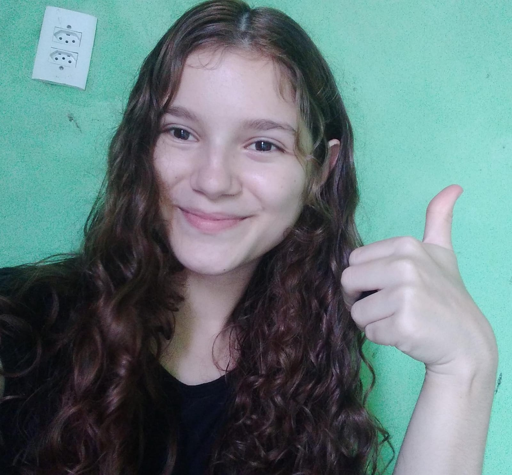

Esse é meu Facebook; Renata Santos
Esse é meu Facebook; Renata Santos
Meu nome é Renata de Alencar, nasci no Ceará no Hospital de Maracanaú no dia 29 de dezembro, sempre gostei de animais e de inglês,
mas também achava e acho a tecnologia algo incrível e queria trabalhar com isso,
mas minhas habilidades de socialização não são as melhores, então quero trabalhar como programadora,
e essa é meu começo, espero conseguir, irei me esforçar bastante.
Esse é meu Facebook; Renata Santos
 Esse é meu Instagram Renata Santos7429
Esse é meu Instagram Renata Santos7429
 Esse é meu canal Renata de Alencar
Esse é meu canal Renata de Alencar